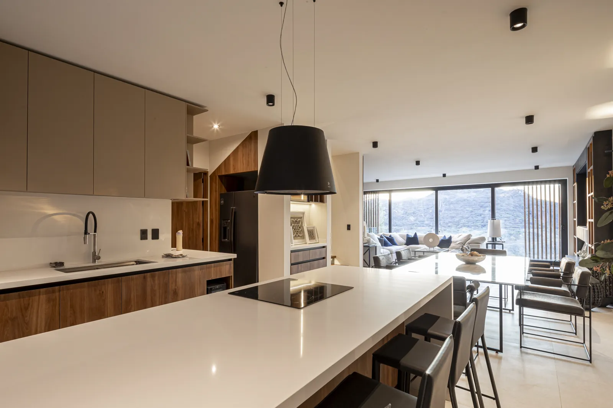
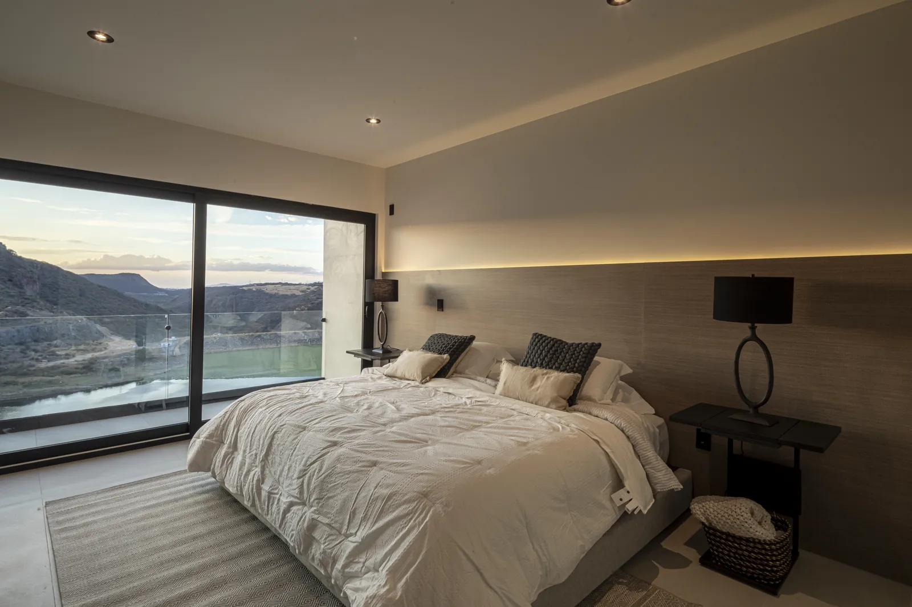
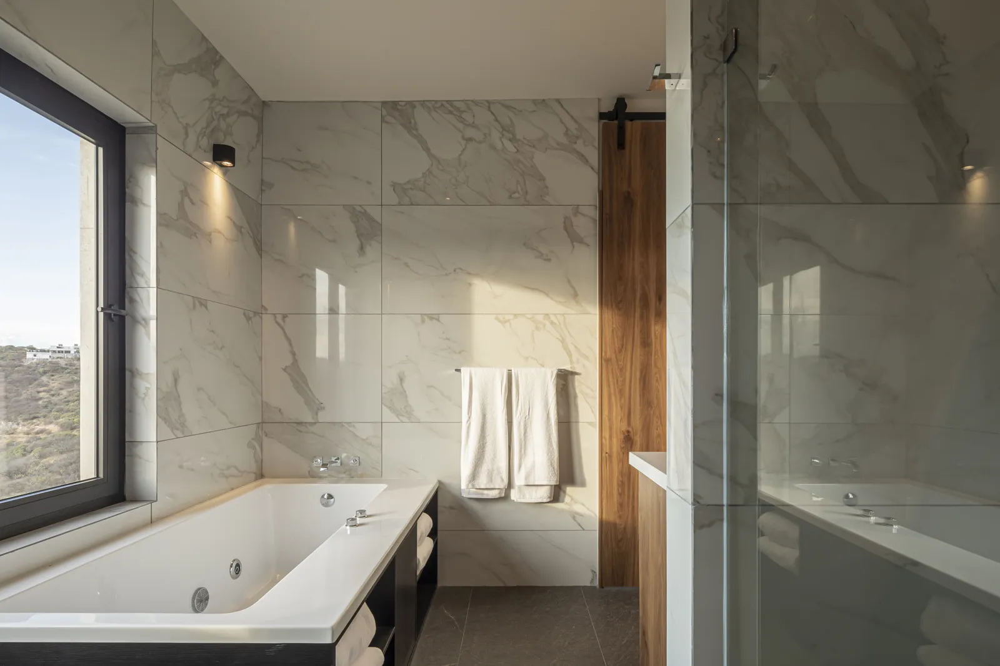
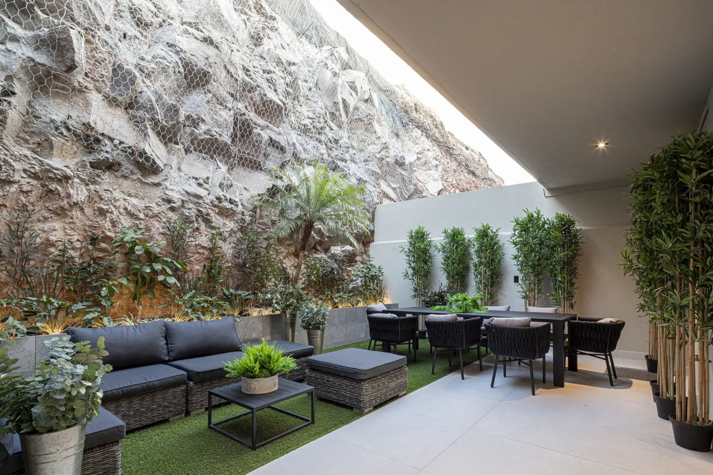

Cada nivel tiene una función
La distribución de tres plantas distingue áreas de servicio, convivencia y descanso. Puede encajar si valoras esa separación en lugar de concentrar todo en un solo nivel.
Casa · Punta Serra
$8,000,000 MXN
Referencia de ficha. Confirma el precio vigente.




Desliza para explorar las imágenes → · Imágenes ilustrativas del proyecto.
MÁS ALLÁ DE LOS METROS CUADRADOS
Puede encajar contigo si… Te atrae una casa contemporánea con actividades separadas por niveles y un entorno en Cañadas del Lago.
La distribución de tres plantas distingue áreas de servicio, convivencia y descanso. Puede encajar si valoras esa separación en lugar de concentrar todo en un solo nivel.
Las tres recámaras con baño permiten organizar horarios con mayor independencia. El jardín añade un espacio exterior a la propuesta.
Punta Serra se ubica en Cañadas del Lago, Corregidora. Vale la pena conocer el entorno y probar los trayectos que harías todos los días antes de elegir por las imágenes.
Confirma la etapa y fecha contractual de entrega de Casa Serena #1. Revisa las escaleras y distingue los renders de los acabados incluidos.
UBICACIÓN Y ENTORNO
Enlace publicado por Punta Serra. Coordinamos el acceso y el punto de encuentro antes de la visita.
Referencia de zona: sitio del desarrollo.Proyecto residencial con jardín y espacios sociales integrados. Consulta etapa de obra, plazo de entrega y condiciones de compra.